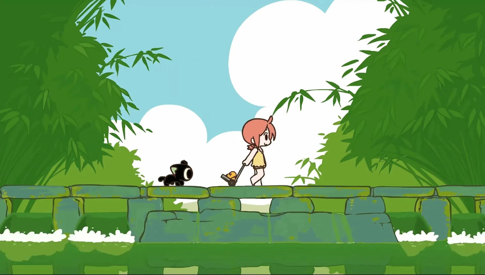

罗小黑战记
故事主要围绕罗小黑和罗小白的日常生活以及他们与妖精世界的互动展开。一方面，罗小黑在罗小白的照顾下逐渐成长，并展现出自己独特的能力和个性；另一方面，他们也逐渐卷入了妖精世界的纷争和冒险中。
在剧情的发展中，罗小黑和无限之间建立了深厚的师徒情谊。无限不仅教导罗小黑如何控制和使用自己的能力，还带领他见识了妖精世界的广阔和复杂。同时，罗小黑也通过与无限和其他妖精的互动，逐渐学会了如何与人相处、如何面对困难和挑战。
在冒险的过程中，罗小黑和伙伴们经历了许多离奇和玄幻的事件。他们遇到了各种神奇的生物和强大的敌人，也结识了许多志同道合的朋友。在这些经历中，罗小黑不仅锻炼了自己的能力，还逐渐成长为一个勇敢、善良、有担当的猫妖。